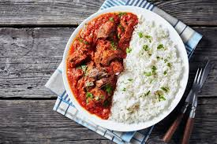

RICE AND STEW

Description
Rice and Stew is a classic and beloved dish enjoyed across West Africa and many parts of the world. The stew is made from a flavorful blend of tomatoes, onions, peppers, and spices, giving it a vibrant red color and a savory aroma. The dish is a classic favorite in many West African homes, often enjoyed as a comforting everyday meal or at special gatherings. The combination of soft, fluffy rice and spicy, well-seasoned beef stew makes it both satisfying and full of traditional flavor.
Ingredients
For the Rice:
- 2 cups long-grain rice
- 4 cups water
- 1 teaspoon salt
- 1 tablespoon vegetable oil or butter (optional)
For the Stew:
- 5 medium-sized tomatoes (or 1 can of blended tomatoes)
- 2 red bell peppers
- 1–2 Scotch bonnet (ata rodo) or chili peppers (for spice)
- 1 large onion
- 2–3 tablespoons tomato paste
- 1/2 cup vegetable oil
- 500g beef, chicken, or fish (your choice)
- 1 teaspoon curry powder
- 1 teaspoon thyme
- 2 seasoning cubes
- Salt to taste
Preparation Steps
Step 1: Cook the Rice
- Wash the rice thoroughly in cold water to remove excess starch.
- In a pot, add 4 cups of water, salt, and a little oil (optional).
- Bring to a boil, then add the rice.
- Cook on medium heat until the rice is soft and all the water is absorbed.
- Fluff with a fork and set aside.
Step 2: Prepare the Stew
- Blend the base: Blend the tomatoes, red bell peppers, Scotch bonnet, and onion until smooth.
- Cook the meat: Season your beef or chicken with salt, seasoning cubes, curry powder, and thyme. Boil until tender, then set aside. Keep the stock (broth) for flavor.
- Fry the sauce: Heat the vegetable oil in a pot. Add the tomato paste and fry for 2–3 minutes. Pour in the blended mixture and cook on medium heat for about 10–15 minutes, stirring occasionally to prevent burning.
- Season the stew: Add salt, seasoning cubes, thyme, and curry powder. Stir well and continue cooking until the oil begins to float on top — this means the stew is ready.
- Add the meat: Add your cooked beef or chicken (and a little of the stock) into the stew. Let it simmer for 5–10 minutes so the flavors combine beautifully.
- Serve:Scoop the rice onto a plate and pour the rich tomato stew beside it.
HOME PAGE